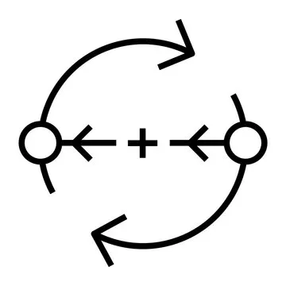
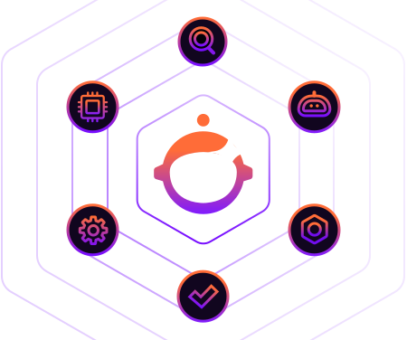
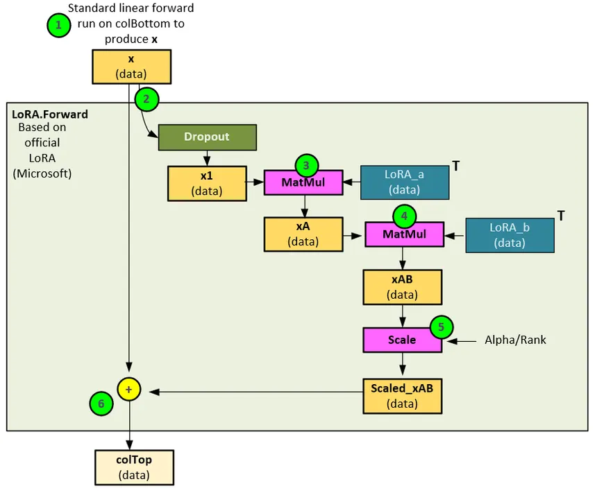
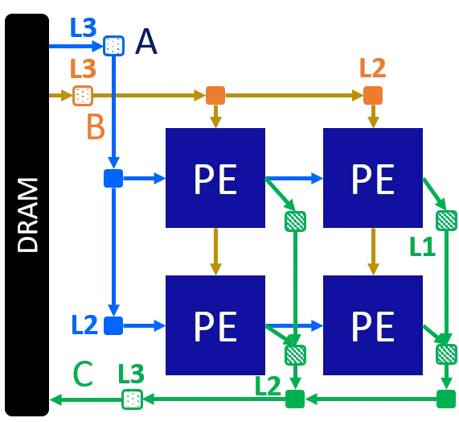
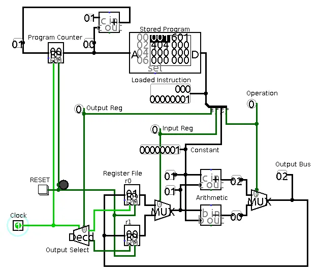
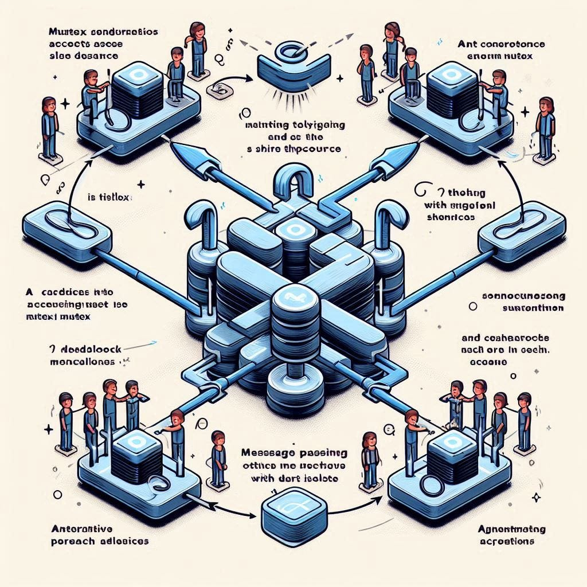
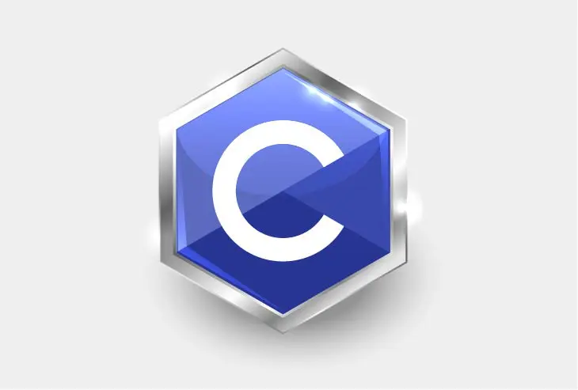
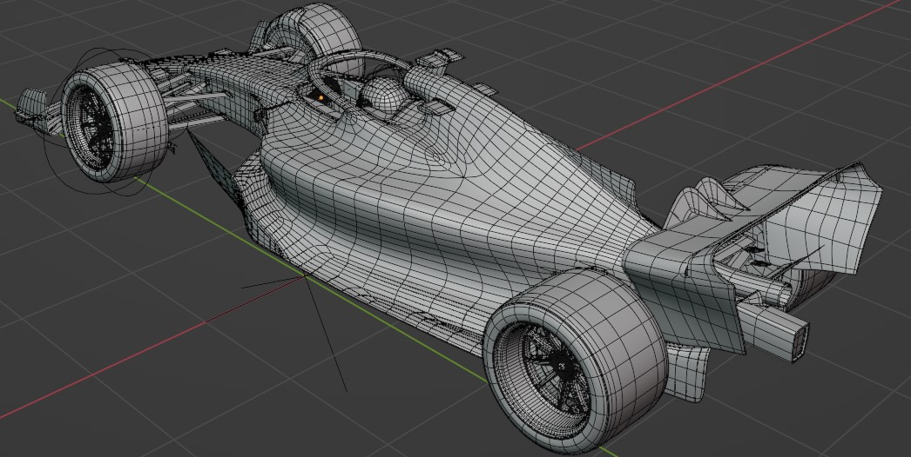
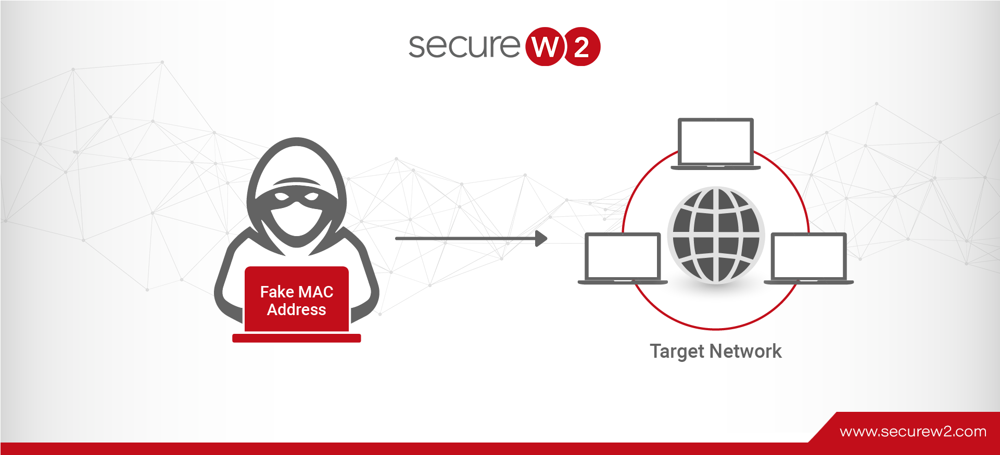

Reinforcement Learning in Resource Allocation
Hybrid reinforcement learning framework for intelligent resource allocation in edge computing environments using multi-armed bandits and Q-learning.

Custom AI Agent Builder
Platform for creating, configuring, and deploying AI agents with AutoGen 0.4 and Streamlit for seamless AI-driven workflows.

Fine-Tuning LLMs with LoRA
Parameter-efficient fine-tuning pipeline using LoRA to enhance Phi2 LLM's error detection capabilities in scientific queries.

Routing Algorithms Simulator
Implementation and analysis of Distance Vector, Link State, and Path Vector routing algorithms across diverse network topologies.
Parallel CUDA Algorithms for Max Network Flow
Enhanced Goldberg's push-relabel algorithm through parallel processing using CUDA with lock-free variations for GPU execution.
Image Authenticity Classification with ViT
Vision Transformer model to distinguish AI-generated images from real ones using advanced data augmentation techniques.

Optimizing Systolic Array Configurations
Design and analysis of systolic array configurations to optimize hardware utilization for various neural network topologies.

CPU Arch & Memory Config Analysis
Extensive simulations using gem5 to evaluate CPU models, clock frequencies, and memory technologies impact on quicksort performance.
Distributed Parallel File System
Parallel file system with Client, Metadata Server, and File Servers for striped file storage using gRPC and protobuf.

Synchronizer for Path Expressions
Parser for path expressions that synchronizes operations using mutex locks and semaphores for classic concurrency problems.

Minimal C Compiler
Lightweight C compiler with lexical analysis, recursive descent parsing, and semantic checks for a subset of C language.

3D Formula 1 Track with Blender
Blender Python script to programmatically generate a 3D model of an F1 circuit using GeoJSON track data coordinates.

Detecting Fake MAC Addresses
Tool to detect MAC address spoofing in wireless networks using Scapy and Macvendors API for vendor verification.
Financial Services Flutter Application
Complete financial suite with loan eligibility classifier and stock price prediction, built with Google Flutter.